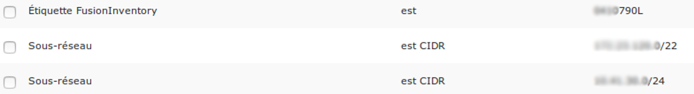
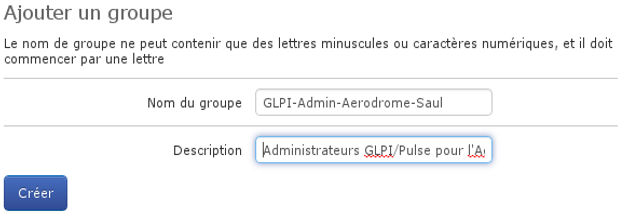
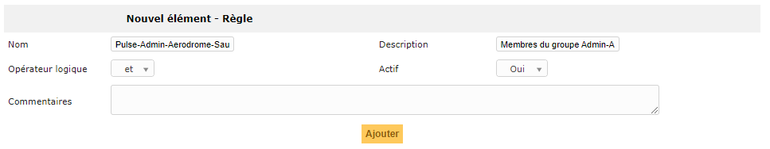
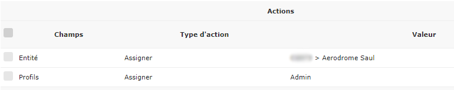

Corrélation avec l’outil de gestion de parc¶
GLPI local¶
GLPI existant¶
Affichage des machines¶
Entités et lieux¶
Règle sur l’entité¶
Exemple :¶


Règles de lieu¶
Identique aux entités, cette section permet de séparer des entités pour plus de détails.
Gestion des groupes¶
La gestion des groupes permet de faire coïncider les groupes GLPI aux groupes Pulse.
Création d’un groupe Pulse¶
Il faut créer les groupes nécessaires à l’utilisation de Pulse.

Le groupe doit commencer par « GLPI- ». Il est conseillé de respecter la nomenclature de l’exemple.
Synchroniser les groupes GLPI¶
Gestion des utilisateurs¶
Règles d’affectation et profils¶
Depuis GLPI, Administration >> Règles >> Règles d’affectation d’habilitations à un utilisateur, ajouter une nouvelle règle :

Puis ajouter un critère d’appartenance au nouveau groupe :

Et enfin ajouter une action qui assigne les utilisateurs à l’entité voulue ainsi qu’une action attribuant un profil de droits à ces utilisateurs :

Ajouter l’utilisateur au groupe dans Pulse¶
Pour ajouter un utilisateur à un groupe dans Pulse, il faut éditer un utilisateur et ajouter son groupe :